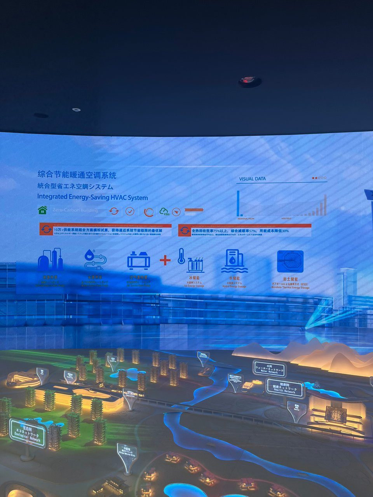
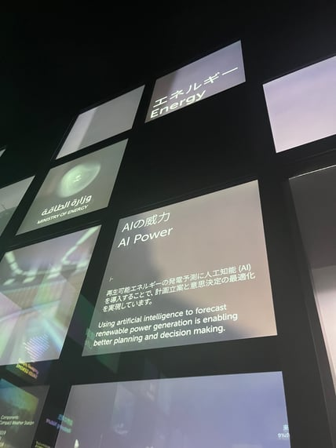
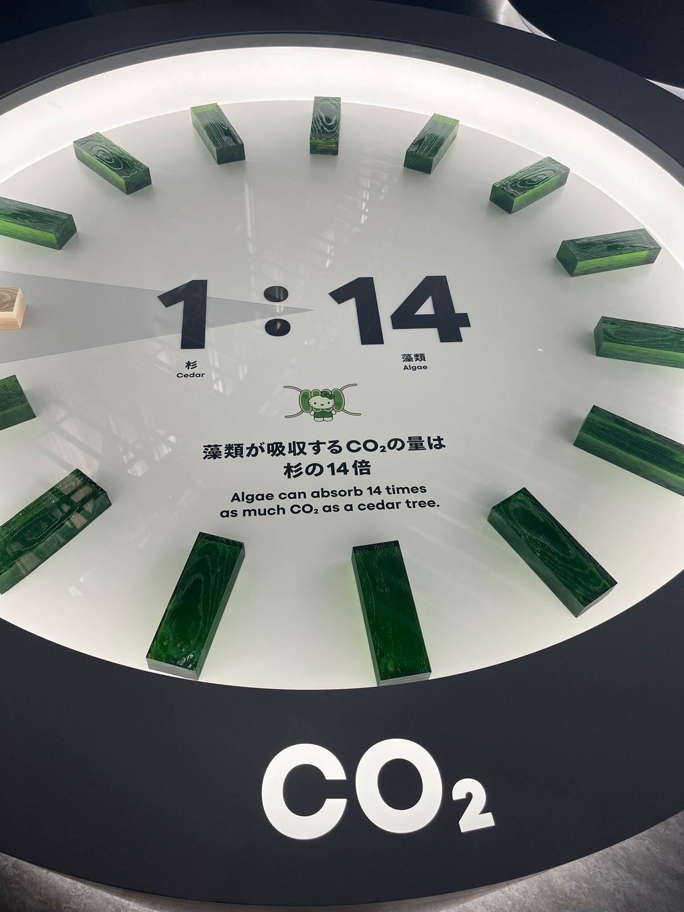
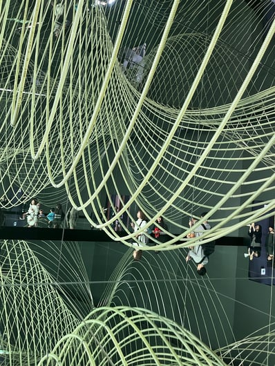
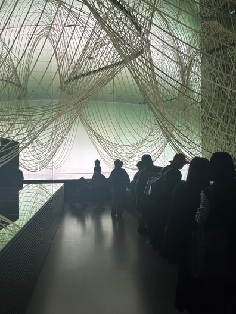

La Expo Osaka 2025 reunió visiones de futuro sobre energía, sostenibilidad, automatización y cambio climático. Desde Clickie recorrimos varios pabellones con una pregunta en mente: qué señales concretas deja hoy la conversación global sobre gestión energética.
La conclusión fue bastante clara: el sistema que viene será más descentralizado, automatizado e inteligente, y eso ya se está viendo en soluciones reales.
China: eficiencia energética basada en datos
Uno de los mensajes más potentes del recorrido fue la integración entre inteligencia artificial, monitoreo y energías renovables. El pabellón chino mostró cómo datos y análisis predictivo pueden ayudar a balancear redes complejas y a integrar fuentes como solar y eólica con más precisión.
La idea central coincide con lo que vemos todos los días: cuando la operación gana visibilidad, también gana margen para decidir mejor.

Arabia Saudita: IA aplicada a infraestructura energética
Otra línea fuerte fue el uso de modelos predictivos para anticipar fallas, ajustar distribución y optimizar el uso de energía renovable. También aparecieron ejemplos de automatización física, como flotas de robots para mantener paneles solares y maximizar rendimiento.
Lo más interesante no es solo la tecnología, sino cómo se conecta con decisiones operativas y planificación energética de gran escala.

Japón: naturaleza, energía y cultura
El pabellón japonés propuso una mirada distinta, donde la innovación energética se cruza con bioenergía, materiales renovables y experiencias culturales. El trabajo con algas como captura de CO2 y potencial fuente energética mostró cómo la sostenibilidad también puede abrir caminos hacia modelos más circulares.
Ese enfoque deja una idea potente: la transición energética no es solo técnica, también es cultural.

Las instalaciones visuales y los prototipos vinculados a energía limpia reforzaban justamente ese punto: el futuro no se diseña solo con infraestructura, también con nuevas formas de relacionarnos con los recursos.


Qué nos deja Osaka
Más allá de la escala de la feria, el aprendizaje es bastante directo: las empresas que quieran competir mejor van a necesitar más datos, mejor automatización y una gestión energética mucho más conectada con sus decisiones diarias.
En Clickie seguimos construyendo en esa dirección, ayudando a que la tecnología esté realmente al servicio de una operación más sostenible y mejor informada.
Descubre cómo gestionar energía con datos reales o escríbenos a hola@clickie.io.